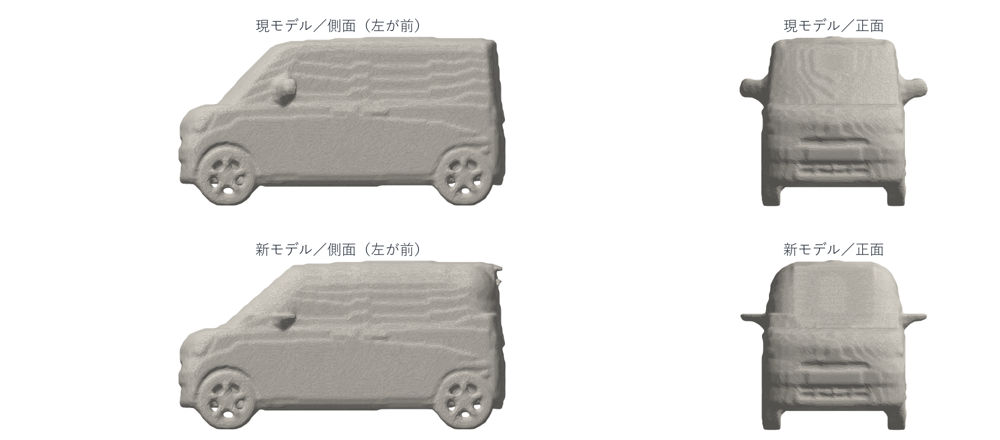
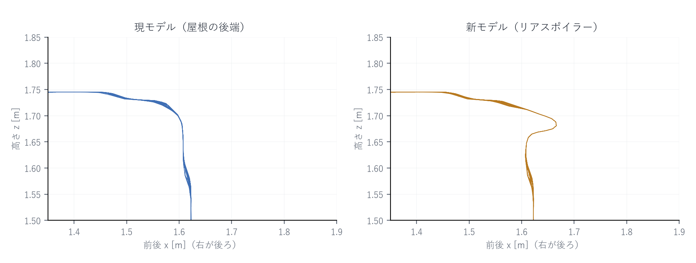
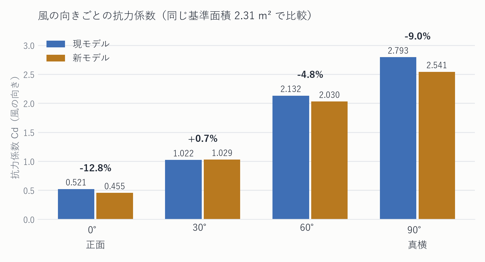

CFD 解析レポート
現モデルと新モデルの比較・改善提案
現モデル（ダイハツ タント 2代目相当の形状）に対し、フロントガラスを寝かせ、天井の左右の角を丸め、屋根の後端に小さなリアスポイラーを加えた新モデルを作り、同じ条件で空力解析を行った。結果は次のとおりである。
| 項目 | 現モデル | 新モデル | 変化 |
|---|---|---|---|
| 抗力係数 Cd（正面からの風） | 0.521 | 0.455 | −12.7% |
| 抗力係数 Cd（斜め30°） | 1.022 | 1.029 | +0.7% |
| 抗力係数 Cd（斜め60°） | 2.132 | 2.030 | −4.8% |
| 抗力係数 Cd（真横90°） | 2.793 | 2.541 | −9.0% |
| WLTCモード燃費（試算） | 22.6 km/L | 約 23.3 km/L | +約3% |
| 2030年度燃費基準 達成率 | 81% | 約 84% | +約3ポイント |
| 車両価格への上乗せ（試算） | — | 約 1万円 | +0.7%程度 |
Cd は 4.5 cm 間隔の粗い格子による簡易 CFD の値であり、絶対値は実車より大きく出る。ここでは同一条件で計算した現モデルとの差のみを用いている。達成率は車両重量 910 kg（タント X 2WD 相当）での計算値。
要点は 3 つである。第一に、正面からの風に対する空気抵抗は 1 割強減った。第二に、その効果を燃費に換算すると +3% 程度（22.6 → 約 23.3 km/L）であり、高速走行が多いほど効く。第三に、2030年度燃費基準の達成率は 81% から約 84% に上がるが、2027年5月から適用されるエコカー減税の 85% の線にはわずかに届かない見込みである。
空力（空気の流れ）の改良が、実際にどれだけ空気抵抗を減らし、燃費や税制上の区分にどう効くかを、自分の手元の計算で確かめることを目的とした。市販の解析ソフトは使わず、解析プログラムから可視化ページまでを自作した。
市販 CFD ソフトや OpenFOAM は使用していない。費用は 0 円（電気代を除く）。
入手した3Dモデルは見た目用で、すき間や穴があり、そのままでは解析に使えない。次の手順で解析用の形に作り直した。
新モデルは、現モデルに次の 3 点を加えた形である。いずれも空気の流れのはがれ（はく離）を抑えることを狙っている。
| 変更点 | 現モデル | 新モデル | 狙い |
|---|---|---|---|
| フロントガラスの傾き | 水平から54° | 水平から41° | 屋根前端でのはく離を抑える |
| 天井の左右の角 | ほぼ角 | 半径30 cmで丸め | 側面への回り込みを滑らかにする |
| 屋根後端 | なし | 三角スポイラー | 後流の巻き込みを整える |
スポイラーは屋根の後端から後ろへ 17 cm 伸び、後端で 5 cm 下がる小さな三角形である（上向きではない）。体積は 6.34 → 6.21 m³、真正面から見た投影面積は 2.31 → 2.30 m² とほぼ変わらない。


格子ボルツマン法（LBM、D3Q19）を用いた。簡単に言えば、空気を細かい粒の集まりとみなし、ます目の上で 19 方向に動かしてはぶつけ合う操作を何万回もくり返す方法である。乱れた流れは LES（Smagorinsky モデル、定数 0.12） で扱う。これは、ます目より小さい渦を 1 つずつ計算せず、その分を空気の粘り気に上乗せする考え方である。
| 項目 | 設定 | 項目 | 設定 |
|---|---|---|---|
| 風速 | 100 km/h（27.8 m/s） | 格子 | 331×178×122（719万セル） |
| 風の向き | 0°・30°・60°・90° | 格子間隔 | 4.5 cm |
| 床 | 車の後ろへ流れる（走行路面） | 計算領域 | 14.9 × 8.0 × 5.5 m |
| タイヤ | 固定（回転なし） | 計算時間 | 1ケース 約21分（GPU） |
| 計算した時間 | 3.11 秒ぶん（24,000ステップ） | 平均の区間 | 1.40 秒以降 |
風の向きは、車から見た相対風の角度である。30°なら「時速 86.6 km で走行中に横から 50 km/h の風を受けた状態」、90°なら「停車中に真横から 100 km/h の風を受けた状態」にあたる。
抗力は車体表面の圧力を積分して求めた（圧力抗力）。運動量交換法でも力を出して突き合わせたところ、こちらは壁の近くの格子が粗く摩擦が過大に出た（Cd 0.94 相当）ため、表示には使っていない。計算の途中では、接地部の基準圧力のかたよりと記録タイミングの偏りという 2 つの不具合を見つけて修正した。

正面からの風では抗力係数が 12.7% 下がった。真横（90°）でも 9.0% 下がっており、天井の角を丸めた効果と考えられる。一方、斜め 30° ではほとんど変わらなかった。斜めからの風では車の側面が受ける力が支配的になるためである。
| 風の向き | 現モデル Cd | 新モデル Cd | 変化 |
|---|---|---|---|
| 0°（正面） | 0.521 ± 0.045 | 0.455 ± 0.039 | −12.7% |
| 30° | 1.022 ± 0.029 | 1.029 ± 0.029 | +0.7% |
| 60° | 2.132 ± 0.042 | 2.030 ± 0.044 | −4.8% |
| 90°（真横） | 2.793 ± 0.053 | 2.541 ± 0.043 | −9.0% |
± は平均を取った区間での時間的なばらつき（標準偏差）。平均化時間が 1.7 秒と短いため、低減率そのものの不確かさは ±5 ポイント程度ある（0°の場合、−12.8% ± 4.9 ポイント）。
| 現モデル | 新モデル | 差 | |
|---|---|---|---|
| 解析値（絶対値は過大） | 557 N ／ 15.5 kW | 486 N ／ 13.5 kW | −71 N |
| 実車想定に換算 | 約 338 N ／ 9.4 kW | 約 299 N ／ 8.3 kW | −39 N |
解析値は粗い格子・圧力のみの積分による値で、実車より 5 割ほど大きく出る。実車想定は CdA 0.73 m²（Cd 0.34 × 前面投影面積 2.15 m²）を出発点とし、摩擦抵抗（形を変えても変わらない分）を考慮して低減率を 11.4% として換算した値である。
燃費は「走行に必要な仕事のうち、空気抵抗が占める割合」に低減率を掛けて求めた。WLTCモード（市街地・郊外・高速の 3 区間）の速度パターンを使って計算すると、この車格では空気抵抗が正味の駆動仕事の 33% を占める。
| 区間 | 空気抵抗 | 転がり抵抗 | 加速 |
|---|---|---|---|
| 市街地（L） | 8.6% | 18.7% | 72.7% |
| 郊外（M） | 22.7% | 20.4% | 56.9% |
| 高速（H） | 48.3% | 21.2% | 30.5% |
| WLTC 合計 | 33.3% | 20.5% | 46.2% |
| （参考）100 km/h 定常 | 78.8% | 21.2% | 0% |
空気抵抗の仕事が 12.7% 減ると、走行に必要な仕事は 4.2% 減る。アイドリングや補機の燃料は走行の仕事に連動しないため、燃料の減り方は仕事の減り方より小さく、換算係数 0.74〜0.88 を掛けて 3.1〜3.7% の燃料削減となる。
| 項目 | 値 |
|---|---|
| 現モデル（カタログ値） | 22.6 km/L |
| 新モデル（試算の中心値） | 約 23.3 km/L |
| 試算の幅（前提を振った範囲） | 23.0 〜 23.6 km/L |
| 改善率 | +2 〜 +4%（中心 +3%） |
| 市街地だけの場合 | +1% 弱 |
| 高速だけの場合 | +5% 前後 |
| 100 km/h 定常のみ | +8 〜 +9% |
| 前提 | 値 | 根拠・備考 |
|---|---|---|
| 試験自動車重量 | 1,030 kg | 車両重量910 kg＋100 kg＋積載可能重量の15% |
| 転がり抵抗係数 | 0.009（0.008〜0.011） | エコタイヤ装着の軽自動車の一般的水準 |
| 実車の CdA | 0.73 m²（0.68〜0.78） | タントの Cd 公表値はないため推定 |
| ガソリン低位発熱量 | 32.0 MJ/L | 一般値 |
| 仕事→燃料の換算係数 | 0.80（0.74〜0.88） | Willans 線近似で推定 |
フロントガラスを 13° 寝かせるとガラス面積が約 23% 増え、2〜3 kg 重くなる。この重量増による燃費悪化は 0.1 km/L 未満で、上の試算に対しては誤差の範囲である。
2030年度燃費基準（令和12年度燃費基準）は、車両重量ごとの「区分表」ではなく、車両重量 M（kg）に対する連続式で基準値が決まる。
基準値 FE_std = −2.47×10⁻⁶ × M² − 8.52×10⁻⁴ × M + 30.65 ［km/L、WLTCモード］
この式に車両重量を入れると、タント級（880〜910 kg）の基準値は 27.8〜28.0 km/L となる。1 台ごとの「達成の程度」は、その車の WLTC 燃費値を基準値で割った値である。
| 車両重量 | WLTC燃費 | 基準値 | 達成率 | |
|---|---|---|---|---|
| 現モデル（X 2WD 相当） | 910 kg | 22.6 km/L | 27.8 km/L | 81.3% |
| 現モデル（L 2WD 相当） | 880 kg | 22.6 km/L | 28.0 km/L | 80.7% |
| 新モデル（910 kg 想定） | 910 kg | 約 23.3 km/L | 27.8 km/L | 約 83.8% |
| 新モデル（幅を見た場合） | 910 kg | 23.0〜23.6 | 27.8 km/L | 82.7〜84.9% |
ダイハツ公式の環境仕様書では、22.6 km/L のグレードは「2030年度燃費基準 80%達成」と表示されている（達成率は 5% 刻みの下の区分で表示されるため）。新モデルは計算上 83〜85% となり、表示上は「80%達成」のままとなる見込みである。
燃費の達成率が効くのは、2026年9月時点では自動車重量税のエコカー減税だけである。自動車税・軽自動車税の環境性能割は 2026年3月31日をもって廃止された。また軽自動車税（種別割）のグリーン化特例は電気軽自動車・天然ガス軽自動車のみが対象で、ガソリン軽自動車は燃費が良くても対象外である。
| 2030年度基準 達成の程度 | 2026/5/1〜2027/4/30 | 2027/5/1〜2028/4/30 | 重量税（軽・3年） |
|---|---|---|---|
| 125%以上 | 免税（2回） | 免税（2回） | 0円 |
| 105%以上 | 免税 | 免税 | 0円 |
| 100%以上 | ▲75% | ▲75% | 1,800円 |
| 95%以上 | ▲50% | ▲50% | 3,700円 |
| 85%以上 | ▲25% | ▲25% | 5,600円 |
| 80%以上85%未満（本件） | ▲25%（5,600円） | 本則税率（7,500円） | — |
現モデル（81%）も新モデル（約84%）も、2027年4月30日までは ▲25%（3年分 5,600円）である。2027年5月1日からは ▲25% の入口が 85% に引き上がるため、どちらも本則税率（7,500円）となる。つまり今回の空力改良だけでは税の区分は変わらない。
85% に届かせるには 23.63 km/L（現状から +4.6%）が必要で、今回の改良（+3%）では約 1.5 ポイント足りない。タイヤの転がり抵抗の低減や床下の整流を組み合わせれば届く範囲である。
この改良を量産車に入れた場合、1 台あたりの原価上昇と、それを価格に転嫁した場合の上乗せ額を見積もった。
| 項目 | 1台あたり | 備考 |
|---|---|---|
| リアスポイラー（部品・塗装、ライン装着） | 1,000〜3,000円 | 後付け純正品は約3.7万円だが、ライン装着なら大幅に下がる |
| フロントガラス面積 +23% | 1,000〜2,500円 | 材料・重量増 |
| 天井の丸み（成形難度） | 0〜500円 | 板厚・材料は不変 |
| シール・モール・内装の調整 | 500〜1,500円 | |
| 金型・開発費の償却 | 700〜2,500円 | 追加投資 5〜15億円 ÷ 生涯 60〜75万台 |
| 原価上昇 合計 | 約3,200〜10,000円 | |
| 車両価格への上乗せ | 約4,000〜20,000円 | 転嫁係数 1.2〜2.0 倍 |
中心値としては約 1 万円である。タント L 2WD（1,496,000円）に対して約 0.7% にあたり、フルモデルチェンジ時の価格改定（十数万円規模）に埋もれる程度の額である。
| 年間走行距離 | 現モデルの燃料費 | 新モデルの燃料費 | 差額／年 | 1万円の回収 |
|---|---|---|---|---|
| 4,800 km（軽の平均） | 36,085円 | 35,001円 | 1,084円 | 約9年 |
| 8,000 km | 60,142円 | 58,335円 | 1,807円 | 約5.5年 |
| 10,000 km | 75,177円 | 72,918円 | 2,259円 | 約4.4年 |
ガソリン 169.9 円/L（2026年9月時点の全国平均、燃料油価格の補助 51 円/L が入った価格）で計算。補助がない場合（205.9 円/L）は差額が 2 割ほど大きくなり、回収年数は 4,800 km/年で約 7.6 年になる。
金額としては大きくないが、軽自動車の年間販売台数（タントは 2025年度 124,103台）で見ると、燃料消費の削減は年間およそ 25 万リットル規模になる。
本章では、これまでに示した数値をどの式から導いたかを順に示す。各式の直後に、記号が何を表すかを一覧で付ける。
解析では、車体表面にかかる圧力を全面にわたって足し合わせ（面積分し）、風の向きの成分を取り出して抗力とした。ボクセル（立方体）で表した車体では、表面は小さな正方形の面の集まりなので、積分は足し算になる。
F_D = Σ_i p_i · n_x,i · ΔA
| 記号 | 意味 | 本件の値 |
|---|---|---|
| F_D | 抗力（風の向きに車を押す力） | — |
| p_i | i 番目の面にかかる圧力（大気圧からの差） | 解析で算出 |
| n_x,i | その面の外向き法線の、風の向きの成分（±1 または 0） | — |
| ΔA | 1 面の面積（格子間隔の 2 乗） | 0.045² = 2.025×10⁻³ m² |
この力を、風速と面積で無次元にしたものが抗力係数 Cd である。
Cd = F_D / ( ½ · ρ · U² · A_ref )
| 記号 | 意味 | 本件の値 |
|---|---|---|
| ρ | 空気密度 | 1.2 kg/m³ |
| U | 車から見た風の速さ | 27.78 m/s（100 km/h） |
| A_ref | 基準面積（正面から見た投影面積） | 2.507 m²（計算上の車体） |
現モデルと新モデルで同じ A_ref を使っている。こうしないと、形が変わって投影面積が変わったときに、抵抗そのものが減ったのか、面積が減っただけなのかが分からなくなるためである。
Cd が分かれば、任意の速度での空気抵抗の力と、それに打ち勝つために必要な動力は次式で求まる。
F = ½ · ρ · V² · Cd · A ／ P = F · V
| 記号 | 意味 | 本件の値 |
|---|---|---|
| V | 走行速度（相対風速） | 27.78 m/s（100 km/h） |
| A | 力に換算するときの基準面積 | 2.31 m²（車の形の投影面積） |
| F | 空気抵抗の力 | 現 557 N ／ 新 486 N |
| P | 空気抵抗に打ち勝つ動力 | 現 15.5 kW ／ 新 13.5 kW |
計算例（現モデル）：F = 0.5 × 1.2 × 27.78² × 0.521 × 2.31 = 557 N、P = 557 × 27.78 ÷ 1000 = 15.5 kW。
走行抵抗は、速度によらない成分（転がり抵抗など）と、速度の 2 乗に比例する成分（空気抵抗）に分けられる。日本の燃費試験でも、この形で走行抵抗を測る。
F_r(v) = f₀ + f₂ · v² （f₂ = ½ · ρ · Cd · A）
| 記号 | 意味 | 本件の値 |
|---|---|---|
| F_r(v) | 速度 v での走行抵抗 | — |
| f₀ | 速度によらない成分（転がり抵抗など） | μ·m·g ≒ 91 N |
| f₂ | 空気抵抗の係数 | ½ρ·CdA |
| μ | 転がり抵抗係数 | 0.009 |
| m | 試験自動車重量 | 1,030 kg |
| g | 重力加速度 | 9.81 m/s² |
WLTCモードの速度パターン（1 秒ごとの速度、1,477 秒、15.0 km）に沿って、走行に必要な仕事を積み上げる。減速中は燃料を使わないので、正の仕事だけを足す。
W⁺ = Σ_t [ F_r(v_t) + m_e · a_t ] · v_t · Δt （かっこ内が正のときだけ足す）
| 記号 | 意味 | 本件の値 |
|---|---|---|
| W⁺ | 1 サイクルの正味の駆動仕事 | 5.07 MJ |
| v_t, a_t | 時刻 t の速度と加速度 | WLTCの速度パターン |
| m_e | 回転部分を含む等価質量 | m × 1.03 |
| Δt | 時間刻み | 1 s |
このうち空気抵抗が占める割合を φ とすると、形状改良で空気抵抗が δ だけ減ったときの仕事の減少率は φ·δ になる。さらに、アイドリングや補機の燃料は走行の仕事に連動しないため、燃料の減少率は仕事の減少率より小さくなる。その比率を k とした。
燃費 FE_new = FE_old / ( 1 − k · φ · δ )
| 記号 | 意味 | 本件の値 |
|---|---|---|
| FE_old | 現モデルのWLTC燃費（カタログ値） | 22.6 km/L |
| φ | 駆動仕事に占める空気抵抗の割合 | 0.333（WLTC合計） |
| δ | 空気抵抗（CdA）の低減率 | 0.127（解析値）／0.114（摩擦込みの実車相当） |
| k | 仕事の減少が燃料の減少に効く割合 | 0.80（0.74〜0.88） |
計算例：δ = 0.114（摩擦を含む実車相当）、φ = 0.333、k = 0.80 とすると、22.6 ÷ (1 − 0.80×0.333×0.114) = 22.6 ÷ 0.9696 = 23.3 km/L。δ = 0.127 をそのまま使えば 23.4 km/L となる。前提（車重・転がり抵抗・CdA・k）を幅で振ると 23.0〜23.6 km/L に収まる。
φ は区間ごとに大きく違う（市街地 0.086、郊外 0.227、高速 0.483）。同じ式に区間ごとの φ を入れれば、市街地 +1% 弱、高速 +5% 前後、100 km/h 定常（φ = 0.788）で +8〜9% という値が出る。
基準値は車両重量の 2 次式で与えられる（重量区分の表は使わない）。
FE_std = −2.47×10⁻⁶ · M² − 8.52×10⁻⁴ · M + 30.65 ［km/L］
達成率 η = FE / FE_std × 100 ［%］
| 記号 | 意味 | 本件の値 |
|---|---|---|
| M | 車両重量 | 910 kg（X 2WD 相当） |
| FE_std | その重量での基準値 | 27.8 km/L |
| FE | その車の WLTC 燃費値 | 現 22.6 ／ 新 約23.3 |
| η | 達成の程度 | 現 81.3% ／ 新 約83.8% |
計算例：FE_std = −2.47×10⁻⁶×910² − 8.52×10⁻⁴×910 + 30.65 = −2.045 − 0.775 + 30.65 = 27.83 → 小数第1位に丸めて 27.8 km/L。現モデル 22.6 ÷ 27.8 = 0.813 → 81.3%。新モデル 23.3 ÷ 27.8 = 0.838 → 83.8%。
ある達成率に届くために必要な燃費は、基準値に達成率を掛ければよい。
FE_req = η_target × FE_std （例：0.85 × 27.8 = 23.63 km/L）
1 台あたりの原価上昇は、部品の原価と、金型・開発費を生涯生産台数で割った額の合計である。
ΔC = Σ c_i + I / N ／ ΔP = ΔC × m
| 記号 | 意味 | 本件の値 |
|---|---|---|
| c_i | 各部品・工程の原価上昇 | 合計 2,500〜7,500円 |
| I | 金型・開発・認証の追加投資 | 5〜15億円 |
| N | 生涯生産台数（年12.4万台 × 約6年） | 60〜75万台 |
| ΔC | 1台あたりの原価上昇 | 3,200〜10,000円 |
| m | 価格転嫁の係数（販管費・利益込み） | 1.2〜2.0 |
| ΔP | 車両価格への上乗せ | 約4,000〜20,000円 |
購入者側の燃料費の節約額と、上乗せ分の回収年数は次式で求めた。
S = D · p · ( 1/FE_old − 1/FE_new ) ／ 回収年数 = ΔP / S
| 記号 | 意味 | 本件の値 |
|---|---|---|
| D | 年間走行距離 | 4,800 km（軽の平均） |
| p | ガソリン価格 | 169.9 円/L |
| S | 年間の燃料費の節約額 | 1,084 円/年 |
計算例：S = 4,800 × 169.9 × (1/22.6 − 1/23.3) = 4,800 × 169.9 × 0.00133 = 1,084 円/年。上乗せ 10,000 円なら 10,000 ÷ 1,084 ≒ 9.2 年で回収となる。
後流（車の後ろの渦）は時間とともに揺れるため、抗力も揺れる。平均値がどれだけ信頼できるかは、揺れの周期と平均を取った時間から見積もった。
T_s = H / ( St · U ) ／ N_eff = T_avg / T_s ／ SE = σ / √N_eff
| 記号 | 意味 | 本件の値 |
|---|---|---|
| H | 車の高さ（代表寸法） | 1.75 m |
| St | ストローハル数（渦がはがれる頻度の目安） | 0.2 |
| T_s | 渦がはがれる周期 | 0.32 s |
| T_avg | 平均を取った時間 | 1.7 s |
| N_eff | 実質的なサンプル数 | 約 5.4 |
| σ | Cd の時間的なばらつき | 0.045（現）／0.039（新） |
| SE | 平均値の標準誤差 | 0.019／0.017 |
2 つのモデルの差の標準誤差は √(0.019² + 0.017²) = 0.026 となる。差は 0.066 なので、差は標準誤差の約 2.6 倍あり、「確かに下がっている」とは言える。一方で、低減率そのものは 12.8% ± 4.9 ポイントの幅がある。
今回の新モデルでは天井の左右の角を半径 300 mm で丸めた。この値が現実的かどうかを、寸法の面から確かめる。結論を先に書くと、「窓の上端を少し下げてよい」という前提であれば、R30 cm は検証モデルとして十分現実的な範囲である。ただし、量産車として R30 cm が最適という意味ではない。この 2 つは分けて考える必要がある。
正面から見た断面を長方形とみなし、左右上端を 1/4 円で丸めるとする。中央に残る「完全に水平な屋根」の幅は、全幅から左右の半径を引いた値になる。
平らな部分の幅 = W − 2R
| 記号 | 意味 | 本件の値 |
|---|---|---|
| W | 全幅 | 1,475 mm（現行タント） |
| R | 丸めの半径 | 250 mm または 300 mm |
R = 300 mm なら 1,475 − 300×2 = 875 mm、R = 250 mm なら 1,475 − 250×2 = 975 mm である。つまり R25 → R30 にしても、中央の平らな部分は左右合わせて 10 cm 狭くなるだけである。
より重要なのは「角が実際どれだけ室内側へ食い込むか」である。元の直角の角から見て、45°方向にいちばん大きく削れる量は次式になる。
d = R · ( 1 − 1/√2 ) ≒ 0.293 · R
| 丸めの半径 R | 最大の角削り量 d | 平らな部分の幅（W = 1,475 mm） |
|---|---|---|
| 150 mm | 約 4.4 cm | 1,175 mm |
| 200 mm | 約 5.9 cm | 1,075 mm |
| 250 mm | 約 7.3 cm | 975 mm |
| 300 mm（本件） | 約 8.8 cm | 875 mm |
| 350 mm | 約 10.3 cm | 775 mm |
ここが誤解されやすい点である。R30 cm だからといって室内が 30 cm 削れるわけではない。1/4 円で丸める場合、元の角に対して最も深いところで約 8.8 cm 内側に入るだけである。寸法だけを見れば、あり得ないほど極端な形ではない。
丸みを付ける方法は 2 つある。外へ膨らませるか、上側を内側へ削るかである。軽自動車では前者はほぼ使えない。
R 形状のすべてを金属（ルーフ外板）で作ろうとすると、曲線の始まる位置が屋根から約 300 mm 下がるため、窓をかなり小さくしなければならない。それはタントには合わない。現実的には、次のように役割を分ける。
コンセプトモデルとして作るなら、ガラス上端を 30〜50 mm 下げ、ガラス上角も R 形状にし、外側のルーフ肩を R300 とするあたりから始めるのが妥当である。ただし「3〜5 cm なら法規も量産も必ず通る」という意味ではない。
現行タントは「極細Aピラー」で斜め前方の視界を確保することを特徴としている。窓を大きく下げたり、ピラーを太くしたりすると、その商品性を損なうことになる。
外板だけを削れば終わりではない。実車化するには、少なくとも次の項目を一つずつ確認する必要がある。
| 分野 | 確認・対応すること | R30 で特に効く点 |
|---|---|---|
| 視界 | 前方・斜め前方・側方の視界、Aピラーによる死角、ミラーの視認範囲 | ガラス上端を下げると斜め上方の視界が減る |
| 頭部空間 | 乗員の頭部と内装の間隔（頭上・肩上）、着座姿勢、乗降性 | 角を削る分、肩まわりと頭上の余裕が減る |
| 頭部衝撃 | 内装（ルーフサイドの内張り）への頭部衝撃試験 | 内張りとルーフ骨格の間に潰れしろが必要 |
| カーテンエアバッグ | ルーフサイド内の収納スペースと展開経路、展開時の内張りの割れ方 | 断面が小さくなるほど成立が難しくなる |
| 骨格・衝突安全 | ルーフサイドレールの断面、超高張力鋼板の使い方、側面衝突・横転時の屋根つぶれ耐性 | 断面を削ると強度・剛性が落ちるため補強が要る |
| ガラス | 深い曲げ加工の成形性、光学的なひずみ、可視光線透過率 70% 以上の確保 | 上角を丸めるほど曲げが難しくなる |
| 水まわり・音 | 雨樋・モール・シールの納まり、雨だれ、風切り音 | 肩の曲面は風切り音の発生源になりやすい |
| 生産 | ルーフ外板の成形性（面ひずみ・スプリングバック）、溶接・接着の打点、ガラスの組付け | 大きな R は面の見栄え（映り込み）に敏感 |
| 法規・認証 | 型式指定の再取得、歩行者頭部保護（フロントガラスを含む領域）、視界基準 | ガラス角度の変更と合わせて再試験が必要 |
| 重量・コスト | 補強による重量増、金型の作り直し、認証費用 | 重量増は燃費改善を相殺しうる |
特に注意すべきは、アッパーボディ（屋根まわりの骨格）が衝突安全性に関わる点である。ダイハツ自身も、キャビン骨格の強度と軽量化を安全性能の要素として説明している。外板の形だけを変えても、その下の骨格・内装・エアバッグ・ガラスまで含めて成立させなければ量産はできない。
今回の目的は「CFD で形状変更の効果を分かりやすく示すこと」である。その目的であれば、R25 cm より R30 cm を一度試すほうがよい。効果が大きく出るぶん、粗い格子でも差が読み取りやすいからである。実際、真横からの風で 9.0%、正面で 12.7% という差が得られた。
一方、量産形状としての最適値は、上の各項目とのバランスで決まる。現実的には R150〜R250 のあたりで、ガラス上角の処理と組み合わせて成立させることになると考えられる。今回の R300 は、効果の上限を見るための上振れした条件と位置づけるのが正しい。
本レポートの空力解析は筆者が自作したソルバーによるものであり、メーカーの公表値ではない。燃費・価格・達成率はいずれも公表データと一般的な相場にもとづく試算である。第9章の量産化に関する記述は、公開されている寸法・規格と一般的な設計上の考え方にもとづく検討であり、特定のメーカーの設計内容を示すものではない。